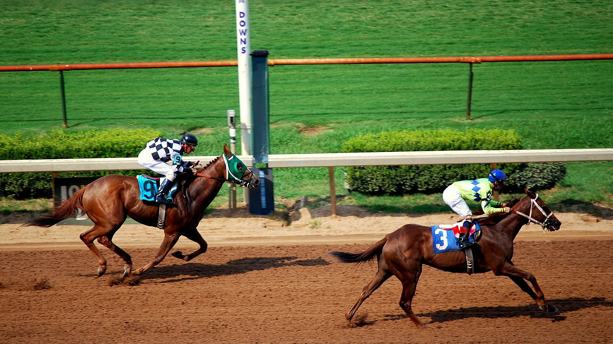

Running In Time sale último y gana por una cabeza su debut en Belmont Park
El potro de dos años de Gun Runner, preparado por Chad Brown y montado por Flavien Prat, ganó en su debut sobre la milla de hierba de Belmont Park.

Salió un tiempo tarde del partidor y se quedó a la cola. Delante, Arequipe, hijo de Candy Ride (ARG) y uno de los menos apostados, llevaba el grupo a un ritmo muy lento: 24,17 s en el primer cuarto y 47,53 s en la media milla. A la entrada de la recta, Running In Time seguía muy lejos de la cabeza.
Remontó por la cuerda. El potro fue ganando terreno por dentro, cambió de marcha en los últimos metros y alcanzó en la misma raya a Bring Cash, hijo de Sea The Moon (GER), al que batió por una cabeza. Suspend, de Tapit, también llegó desde atrás y fue tercero. El crono se paró en 1:36,10 sobre hierba firme.
Llegó a tiempo, como promete su nombre.
Era la octava carrera del domingo y la última del programa: una prueba para potros de dos años sin victorias, dotada con 100.000 dólares. Flavien Prat sumó con ella su cuarta victoria de la jornada, la última con Running In Time para el preparador Chad Brown.
El ganador es hijo de Gun Runner y Time and Motion, por Tapit. La madre, de 13 años, ganó la QEII Challenge Cup (Grado I) y sumó 967.719 dólares en premios. Pertenece a la familia de Brian's Time, ganador de varias pruebas de Grado I. Una hermana entera de Running In Time se vendió este verano por 1,05 millones de dólares en la Fasig-Tipton Saratoga Select Yearling Sale.
Running In Time costó 650.000 dólares como yearling en la subasta de agosto de Fasig-Tipton de 2025. Lo criaron en Kentucky Phillips Racing Partnership y Tracy Farmer, y corre para Jeffrey Drown y Don Rachel. Su primera salida a pista le deja una victoria en una carrera y 55.000 dólares en premios.
Por Martín Larrañeta